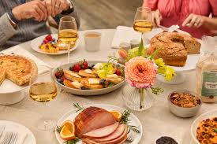
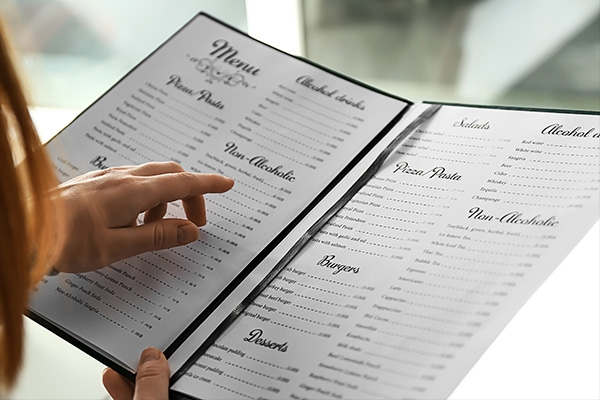

Locally sourced. Elegantly crafted. Unforgettable dining.

Every Saturday & Sunday
Enjoy a curated brunch menu featuring fresh pastries, seasonal fruits, and signature cocktails in a relaxed, elegant setting.
Reserve a Table
Fridays | 7PM - 10PM
Experience live jazz performances paired with our chef's featured dinner specials and handcrafted drinks.
Book Now
First Thursday of Every Month
A multi-course dining experience showcasing the creativity and seasonal inspirations of our culinary team.
Reserve ExperienceSelect Wednesdays
Explore expertly selected wines paired with small plates designed to elevate each flavor combination.
Join Event